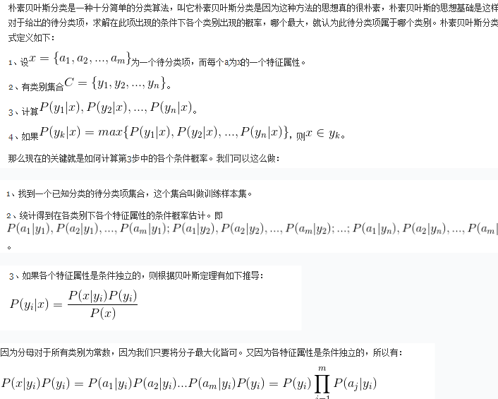
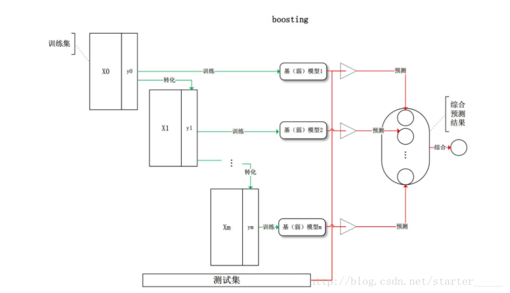

【统计学习】Model Inference(模型推断)
集成学习通过构建并结合多个学习器来完成学习任务，有时也被称为多分类器系统、基于委员会的学习等。集成学习通过将多个学习器进行结合，常可获得比单一学习器显著优越的泛化性能。
Bootstrap
Bootstap是一种再抽样算法,把样本看作总体，进行再抽样得到新的样本
从大小为n的原始训练数据集D中随机选择n个样本点组成一个新的训练集，这个选择过程独立重复B次，然后用这B个数据集对模型统计量进行估计（如均值、方差等）。由于原始数据集的大小就是n，所以这B个新的训练集中不可避免的会存在重复的样本。
统计量的估计值定义为独立的B个训练集上的估计值θ_b的平均
Maximum Likelihood(最大似然)
似然估计必须已知分布。思想是现在有一个样本$X_1,X_2,…,X_n$,找出是怎样的参数最可能产生这样的样本。方式是根据已知分布和样本求出似然函数，并最大化似然函数
Beyesian Model(贝叶斯模型)

就是为了找到对于某个输入$x$下每类正确的概率，先找到某类下，出现各个输入的概率，然后利用贝叶斯公式求出。
EM算法(Expection Maxinum)
EM算法见另一篇
Bagging(套袋)
类似Bootstrap,都是一种再抽样模型。bagging方法是从大小为n的原始训练数据集D中随机选择n′(n′<n)个样本点组成一个新的训练集，这个选择过程独立重复B次。然后，每一个新的训练集都被独立的用于训练一个子分类器，最终分类器的分类结果由这些子分类器投票决定。(对回归问题，计算上述模型的均值作为最后的结果。（所有模型的重要性相同）)
Boosting(提升法)
Re: https://www.cnblogs.com/willnote/p/6801496.html
Boosting是一种框架算法，拥有系列算法，如AdaBoost，GradientBoosting，LogitBoost等算法。
Boosting系列算法的主要区别在于其三要素选取的函数不同算法模型
函数模型:
叠加式模型
目标函数
选择某种函数作为优化目标
优化
